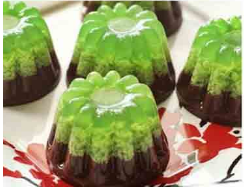

Resep Puding 2 Lapis
Bahan-Bahan :
- Puding Instan 2 Rasa
- Air Putih
- Gula Pasir
Alat :
- Panci untuk merebus air
- Cetakan Puding
- Piring Saji
Langkah-Langkah :
- Siapkan alat dan bahan
- Masukkan 3 gelas air dan 1 bungkus puding bubuk kedalam panci untuk lapisan puding yang pertama, lalu rebus sampai mendidih
- Siapkan cetakan dan masukkan puding yang sudah mendidih tadi kedalam cetakan, tunggu sampai mengeras
- Masukkan lagi 3 gelas air dan 1 bungkus puding bubuk kedalam panci untuk lapisan puding kedua, rebus sampai mendidih
- Jika lapisan puding pertama sudah mengeras maka masukkan puding kedua yang sudah mendidih tadi diatas lapisan pertama, tunggu sampai mengeras
- Pindahkan puding dari cetakan ke piring saji

- Puding siap dinikmati